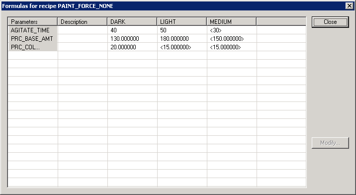

Working with formulas
You can begin using recipe parameters by specifying information such as the formula's name, type, Engineering Unit (EU) range, and the default value. This information defines the formula. You can create formulas at any recipe level.
|
Create a Recipe Parameter for... |
Value is Set from... |
|---|---|
|
An operation |
The unit procedure (step parameter) |
|
A unit procedure |
The procedure (step parameter) |
|
A procedure |
The operator when the batch is started, by selecting a formula or adjusting values. |
You define a recipe parameter at one level and set its value one level higher. When the recipe parameter is accessed from the higher level, it is called a step parameter.
When you have created a set of recipe parameters at the level that you use to run batches, the default values can be considered a "default formula" for the recipe. All formulas are based on a batch size of 100% (not scaled). That is, the default formula value is the value used if the batch is scaled to 100 percent. If you create a batch and scale it to less than a 100%, any formula parameters that are scalable will be scaled to the batch size (percent of the default parameter value).
You can create additional named formulas within Recipe Studio.

You must release the formula to production (in the Formula Properties dialog) for the operator to see the formula.
You can enforce formula selection at batch creation in a top-level recipe. This is set in the recipe's Properties dialog. When set, the operator must select a formula to create the batch. You can configure the recipe to have a default enforced formula. Therefore, at batch creation, a formula is already selected (but can be changed by the operator if needed).